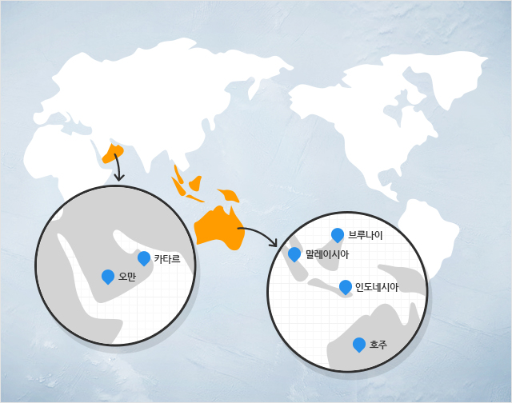

- HOME
- 한국가스공사에서는?
- 천연가스는 어디서 나오나요?
천연가스는 어디서 나오나요?
한국가스공사 천연가스가 어떤 경로로 올까요?
한국가스공사는 인도네시아, 말레이시아, 예멘, 러시아, 브루나이, 호주, 이집트 등
해외에서 천연가스를 수입하고 있습니다. 천연가스 수송의 편리를 위해 부피를 줄여 액체상태의 액화천연가스
(LNG : Liquefied Natural Gas, 액화천연가스 기체인 천연가스를 -162도로 냉각시켜 액체로 만든 것)로 수송선에
싣고 옵니다. 천연가스의 대부분을 해외에서 들여오고 있지만 우리나라 동해바다에서도 천연가스를 개발되어
사용되고 있습니다.
